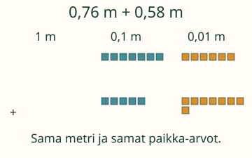
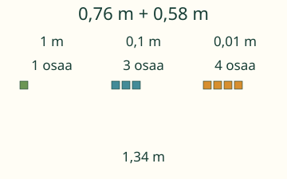
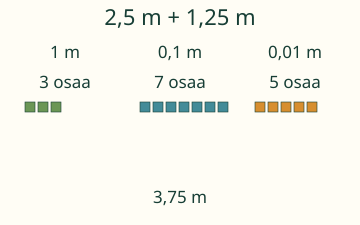
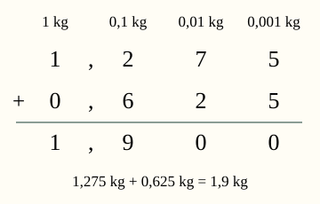

Aava yhdistää 0,76 m ja 0,58 m.
Yhdistä samat paikka-arvot.

14 sadasosaa: onko se 0,14 vai 1,4? Mitä voit vaihtaa ennen koko summaa?
Esimerkit ja selitykset
Vaihto säilyttää määrän
0,76 m + 0,58 m: 14 sadasosaa vaihtuu 1 kymmenesosaksi ja 4 sadasosaksi. Kymmenesosia on nyt 13. Niistä saadaan 1 kokonainen ja 3 kymmenesosaa. Yhteensä 1,34 m.

Eri määrä numeroita, samat paikat
2,5 + 1,25 = 2,50 + 1,25 = 3,75. Nolla luvun lopussa ei muuta arvoa. Viisi kymmenesosaa ei ole viisi sadasosaa. Tasaamme paikka-arvot, emme lukujen oikeita reunoja.

Siirto massaan
1,275 kg + 0,625 kg = 1,900 kg = 1,9 kg. Nyt myös tuhannesosat ovat samanarvoisia keskenään. Mittayksikkö säilyy kilogrammana.

Kokeile itse
Voit vastata suoraan. Kuvaa tai apua saa käyttää.
Apua laskemiseen
Kirjoita lyhyempi desimaaliosa nollilla yhtä pitkäksi: 2,5 = 2,50. Laske samanarvoiset osat yhteen. Aina10 pienempää osaa voidaan vaihtaa1 seuraavaksi suuremmaksi.
Luvun lopun nollat eivät muuta arvoa: 0,5 = 0,50. Voit kirjoittaa myös pisteen tai tarkan murtoluvun, kuten 1/2.
Mitä lukuja voin kokeilla?
Kumpikin luku 0–999, enintään kolme desimaalia. Molemmissa sama mittayksikkö. Yksikkömuunnoksessa annettua kerrointa ei voi vaihtaa.
Lisähaaste: perustele
Lisää ensimmäiseen lukuun0,01 ja vähennä toisesta0,01. Muuttuuko summa?
Katso perustelu
Esimerkiksi0,76+0,58 ja0,77+0,57 ovat molemmat1,34. Etsi syy siirtämällä yksi sadasosa, älä vain laskemalla uudestaan.
Opettajalle ja ilman ruutua
Vuosiluokat 3–6. Kanoninen tavoite on yhteenlasku. Lite yhdistää myös vähennyslaskun, mutta sitä ei vaadita tämän sivun harjoituksissa. Kanoniset required- ja strong-ryhmät säilyvät metadatassa; kirjallisia algoritmeja ei lisätä aloitusportiksi. Arvopalojen fyysinen koko ei kuvaa arvoa: arvo on nimetty sarakkeessa. Oppija saa laskea päässä, osina, murtolukuina tai paperilla; yhden vastauksen hyväksyntä ei osoita menetelmää tai muistissa säilymistä.
Kirjoita lapuille1 m,0,1 m ja0,01 m. Kokoa0,76 m ja0,58 m. Yhdistä samanarvoiset laput ja vaihda aina10 seuraavaksi isommaksi. Pidä sama metrin kokonainen. Laput eivät ole oikean pituisia mittavälineitä.
Palaute on tämän sivun laskutukea. Tekninen syöteraja on128 merkkiä, murtoluvun osissa24 numeroa ja desimaalissa12 merkitsevää desimaalipaikkaa. Rajan ylitys hylätään, ei pyöristetä. Vastauksia ei tallenneta, eikä sivu arvioi oppilaan muistamista tai itsenäistä hallintaa. Pelireittejä ei tässä väitetä varmennetuiksi.
Lähtökysymys: Miksi 0,2 + 0,03 = 0,23 eikä 0,5?